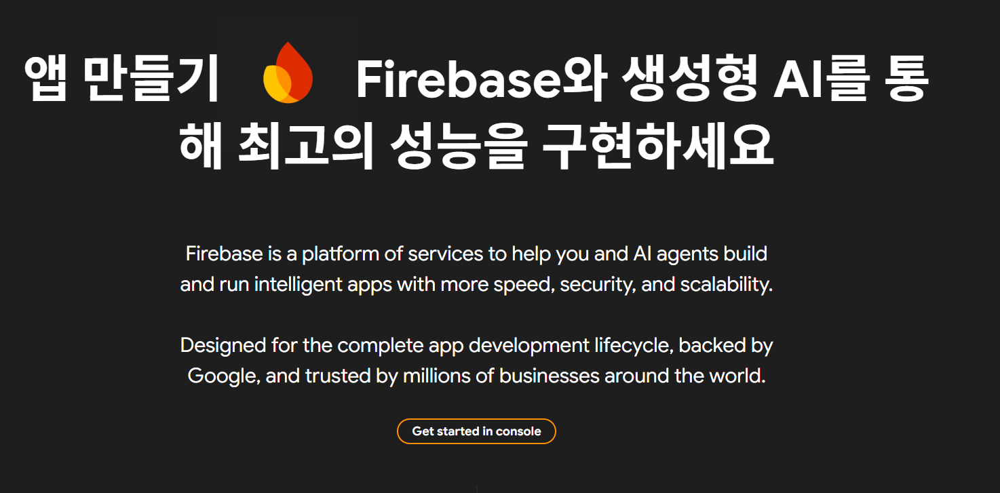
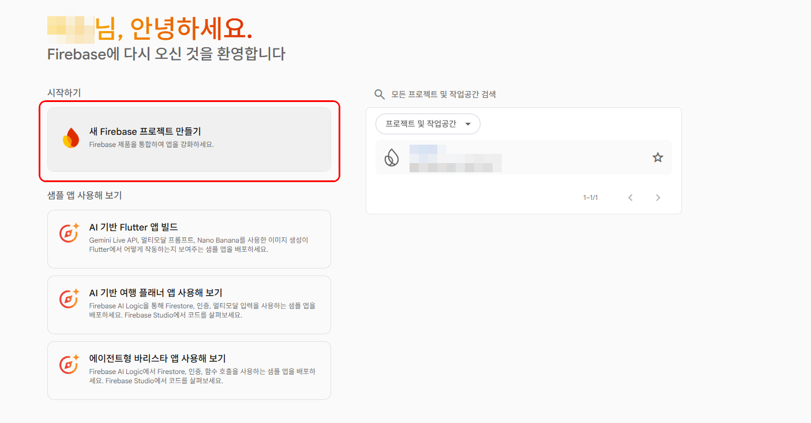
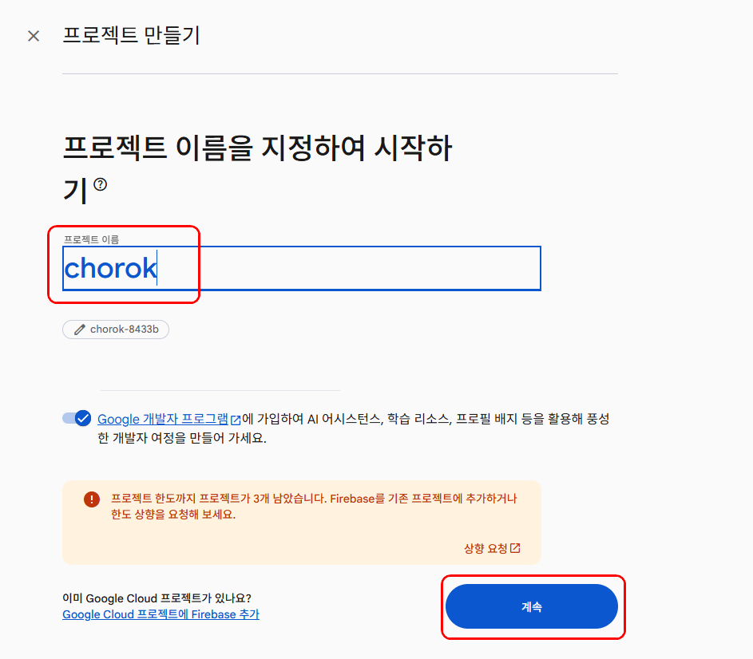
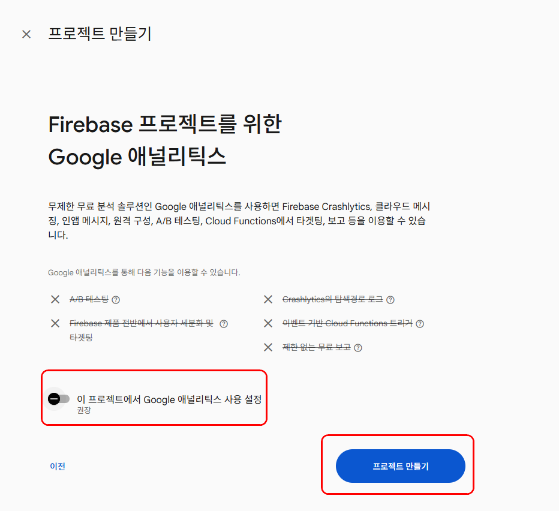
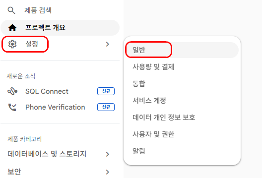
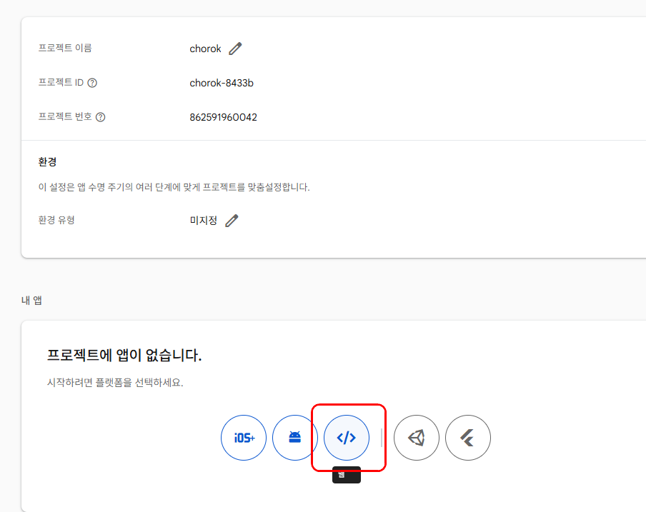
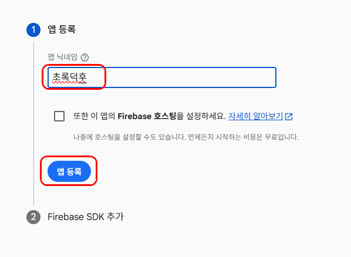
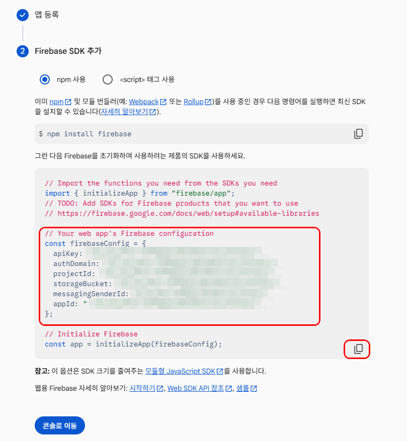
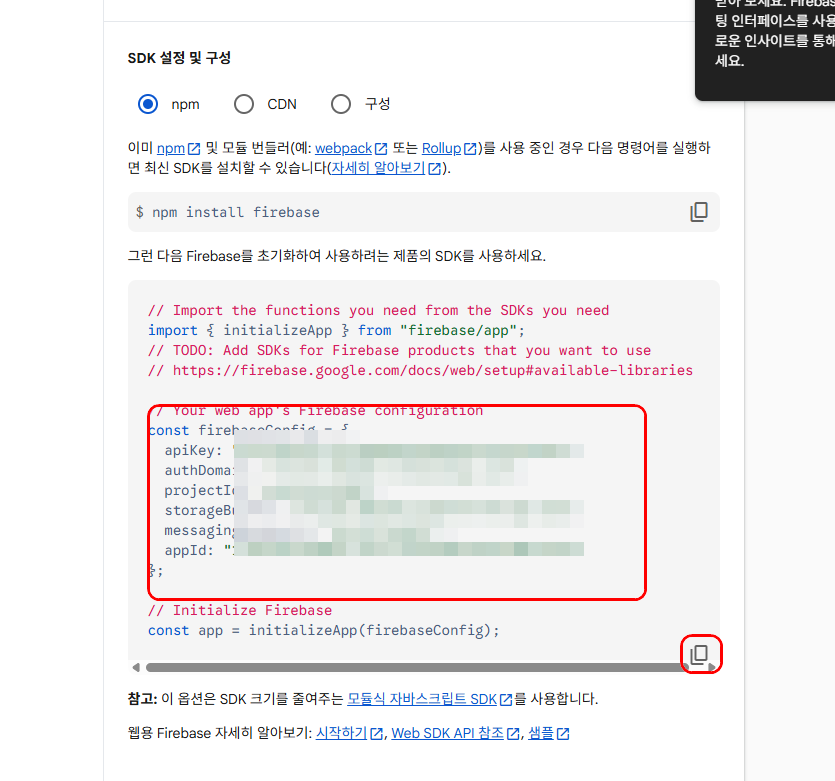

온라인 저장공간 연결 안내
보고 따라 하는
보고 따라 하는
온라인 저장공간 연결 따라하기
자료를 온라인에 저장하거나 다시 불러와야 하는 앱에서는 Firebase 연결이 필요할 수 있습니다. 아래 순서대로 버튼을 누르고, 설정값을 복사해 앱 설정 화면에 붙여넣으면 됩니다.
시작 전 확인
Google 계정에 로그인되어 있어야 합니다. 모든 앱에 필요한 설정은 아니며, 해당 앱에서 온라인 저장공간 연결 안내가 있을 때만 진행하세요.
Google 계정에 로그인되어 있어야 합니다. 모든 앱에 필요한 설정은 아니며, 해당 앱에서 온라인 저장공간 연결 안내가 있을 때만 진행하세요.
1
Firebase 메인페이지 접속
Firebase 메인페이지에서 Get started in console을 클릭합니다.

2
새 프로젝트 만들기
새 Firebase 프로젝트 만들기를 클릭합니다.

3
프로젝트 이름 입력
프로젝트 이름을 입력하고 계속을 클릭합니다. 이름은 알아보기 쉽게 정하면 됩니다.

4
Google 애널리틱스 끄기
Google 애널리틱스 사용 설정을 끄고 프로젝트 만들기를 클릭합니다.

5
설정 > 일반 들어가기
프로젝트가 만들어지면 왼쪽 위 톱니바퀴 설정을 누르고 일반으로 들어갑니다.

중요: 웹 앱 추가와 설정값 확인은 모두 이 일반 화면에서 진행합니다.
6
웹 앱 추가
일반 화면에서 웹 앱 추가 버튼 </>을 클릭합니다.

7
앱 등록
앱 이름을 입력하고 앱 등록을 클릭합니다. 이 이름은 Firebase 안에서 구분하기 위한 이름입니다.

8
설정값 복사
Firebase 설정값 화면에서 오른쪽 아래 복사 아이콘(겹친 네모)을 클릭해 전체 설정값을 복사합니다.

복사한 내용 전체를 앱 설정 화면에 붙여넣으면 됩니다. 필요한 값은 앱에서 자동으로 읽습니다.
9
설정값 다시 확인하기
나중에 설정값을 다시 확인하려면 프로젝트에서 설정 → 일반으로 들어갑니다. 같은 화면에서 복사 아이콘을 눌러 다시 복사할 수 있습니다.

앱에 붙여넣기
앱의 온라인 저장공간 설정 화면을 열고, 복사한 설정값 전체를 붙여넣은 뒤 저장합니다. 테스트 자료를 저장하고 새로고침했을 때 다시 불러와지면 연결이 완료된 것입니다.
주의
학생 개인정보가 들어가는 앱은 저장 위치와 공유 범위를 꼭 확인하세요.
학생 개인정보가 들어가는 앱은 저장 위치와 공유 범위를 꼭 확인하세요.